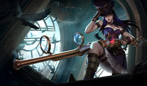
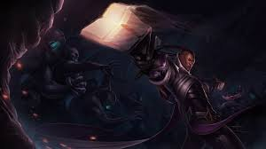
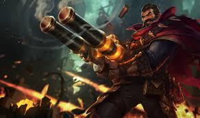

Bottom lane holds your team's other source of considerable damage and is where most of the action is centered around early on in the game. These are your ranged damage dealers the rest of your team is meant to protect. They have more consistent and reliable damage than mid-laners, but take longer in the game to deal high damage and are the easiest members of a team to kill. Being on the bottom side of the map means they are in charge of controlling the Dragon. These members are essential for finishing a game as they are the strongest by the end.

Caitlyn boasts the longest attack range of any character in the game. Opposed to getting in close, Caitlyn prefers to lay down traps and eliminate her foes from afar.

Lucian is an incredibly fast character, being able to dash around fights and rapidly fire shot after shot. Not an enemy to take lightly as he can quckly turn a fight on its head.

Graves is armed with a shotgun and prefers to take fights head on, dealing more damage the closer he is to his target. Definitely not someone you want to take on face to face as he deals massive damage with a single shot.